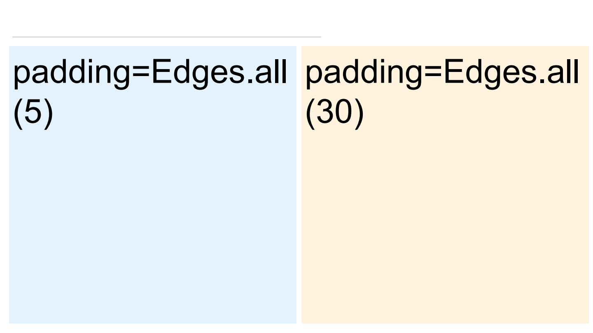
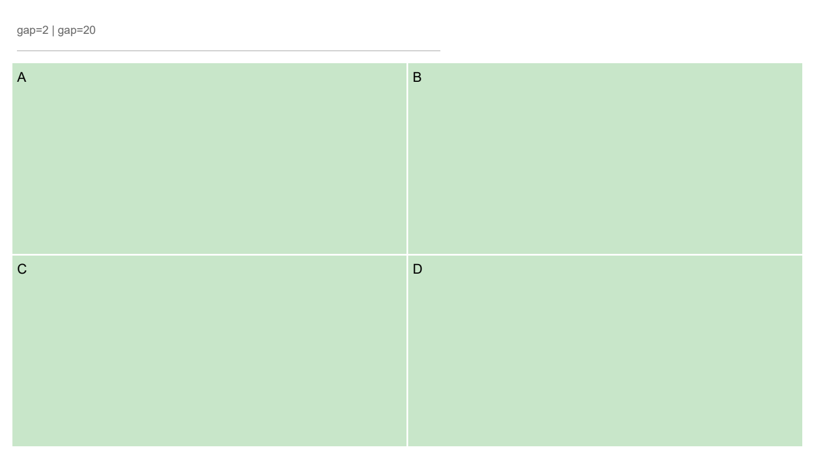
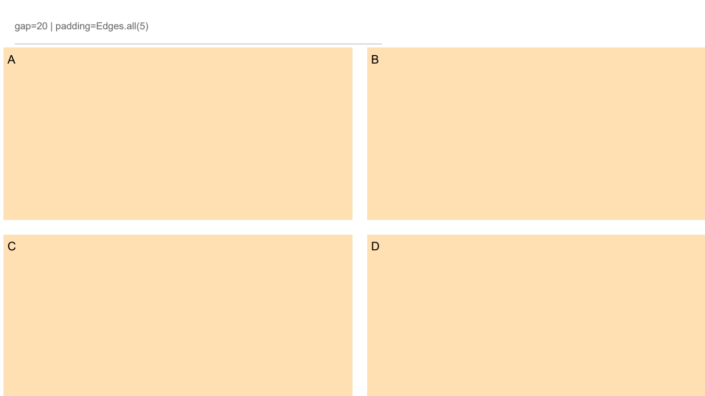
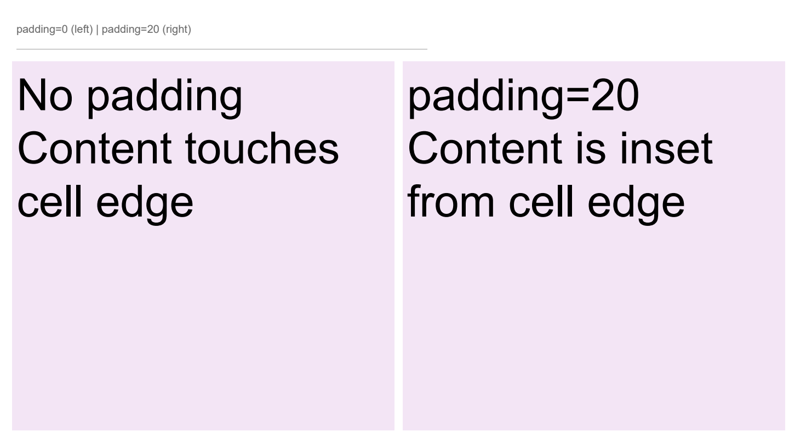
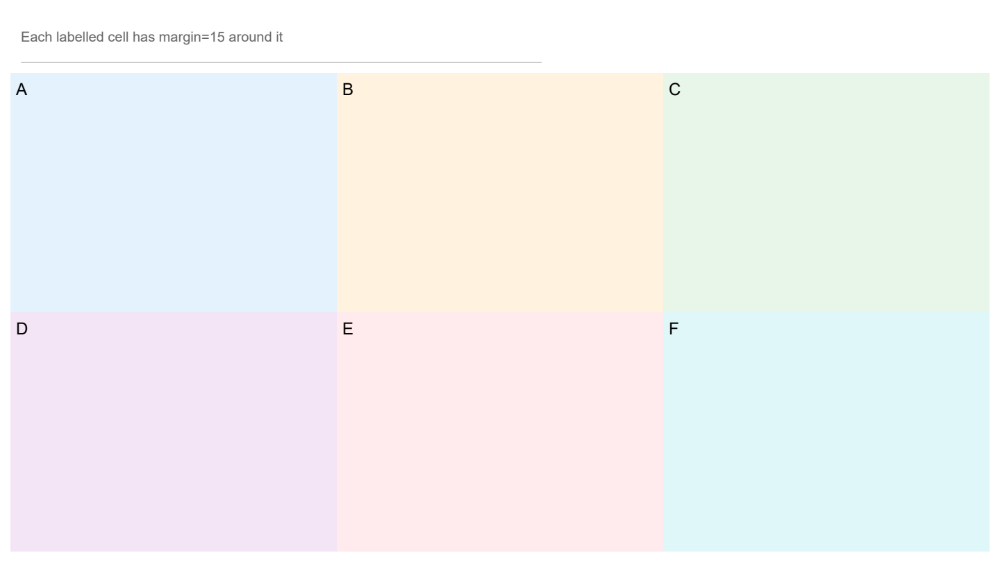

Padding & Margin example
examples/padding_margin.py is a visual demonstration of the layout
spacing system. It generates a 5-slide PDF that compares:
Grid padding —
Edges.all(5)vsEdges.all(30)Grid gap —
gap=2vsgap=20Panel padding —
Edges()(no padding) vsEdges.all(20)Panel margin — each cell has
margin=Edges.all(8)Combined — mixing padding, margin, and gap on the same slide
Run it:
python examples/padding_margin.py
Visual diagram of the spacing concepts
┌── grid.padding ────────────────────────────┐
│ ┌── cell ───┐ gap ┌── cell ───┐ │
│ │ ┌padding──┤ │ ┌padding──┤ │
│ │ │ content │ │ │ content │ │
│ │ └─────────┤ │ └─────────┤ │
│ │ ← margin→ │ │ ← margin→ │ │
│ └───────────┘ └───────────┘ │
└────────────────────────────────────────────┘
grid.padding— outermost space around all cellsgap— uniform space between adjacent cellspanel.margin— extra space added around a specific cellpanel.padding— space inside the cell around its content
Code excerpt
from reporting.layout.geometry import Edges
# Grid-level spacing
slide.grid_layout(rows=2, cols=2, gap=12, padding=Edges.all(20))
# Cell-level spacing
slide[0, 0]._cell.panel.padding = Edges.all(10)
slide[0, 0]._cell.panel.margin = Edges.all(5)
Panel padding and margin are Edges objects — you can set each side
individually:
# Different padding on each side
slide[0, 0]._cell.panel.padding = Edges(left=5, top=10, right=5, bottom=15)
# Symmetric (horizontal vs vertical)
slide[0, 0]._cell.panel.margin = Edges.symmetric(horizontal=10, vertical=20)
Output slides
Slide 1 — Grid padding (5 vs 30):
{kind=link}

Slide 2 — Narrow gap (2px):
{kind=link}

Slide 3 — Wide gap (20px):
{kind=link}

Slide 4 — Panel padding (0 vs 20):
{kind=link}

Slide 5 — Combined layout:
{kind=link}
